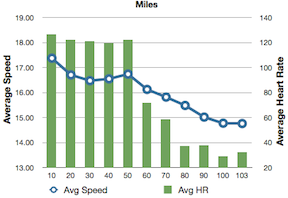
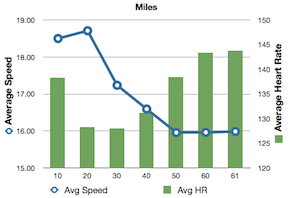
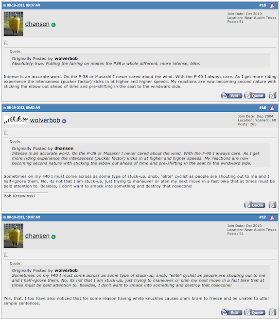

F-40 The intense ride
22 Aug 2013
I set my Garmin Edge 800 up to record split times every mile.
This allows me to do a rough analysis over my normal training course to see where on the course I am having slowness issues, which gives me a clue as to what part of my riding do I need to improve to cause my average speed to increase.
I also leave the one mile split recording for the charity rides so that I can get some sense of endurance over distance and create charts like this:
| Musashi: Georgetown Poppy Ride 2013 | F-40: Copperas Cove Classic Ride 2013 |
|---|---|
|  |  |
With over 4,500 miles on the Musashi I can count the number of mile splits above 30 mph on one hand - and no splits at 31 mph or above.
So far, with only 255 miles on the F-40, and most of those 255 miles being slow learn how to ride the bike miles, I already have two splits above 30 mph. One split at 31.8 mph and another split at 32.1 mph. I have many, many splits in the high 20s.
Two days from now it will be Saturday and the Hotter ’n Hell Hundred ride in Wichita Falls TX. The route is pretty flat and I’m hoping to have a good ride there where several of the splits should be above 30 mph (we shall see).
Over on BROL (Bent Rider On-Line) there was a discussion about how intense it is to ride an F-40:

http://www.bentrideronline.com/messageboard/showthread.php?t=100254&page=2
Basically, the speed of the F-40, combined with the wind handling requirements, causes one to more often than not have extreme concentration so that one does not run off the road or run into other riders.
The F-40 is not for the timid or faint of heart.